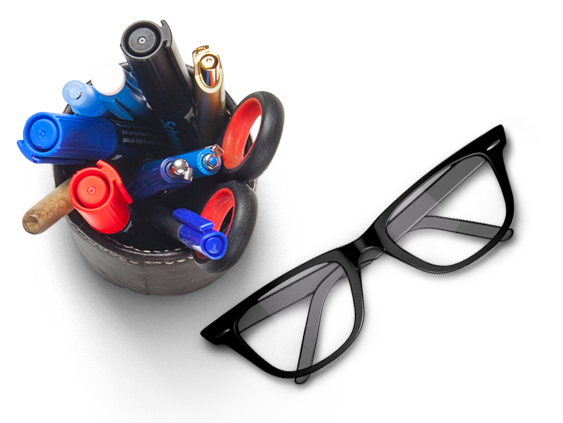

Titulaire d’un baccalauréat obtenu en 2022 avec les spécialités mathématiques et économie,
j’ai poursuivi mon parcours par deux années d’études en Angleterre, orientées vers les mathématiques,
afin de développer mes compétences analytiques et mon ouverture internationale.
Je suis actuellement en deuxième année de BTS SIO en alternance, formation qui me permet d’allier apprentissages théoriques et expérience professionnelle en entreprise.
Intéressé par les technologies, la logique et la résolution de problèmes, je souhaite évoluer dans le domaine de l’informatique et continuer à développer des compétences techniques solides.
